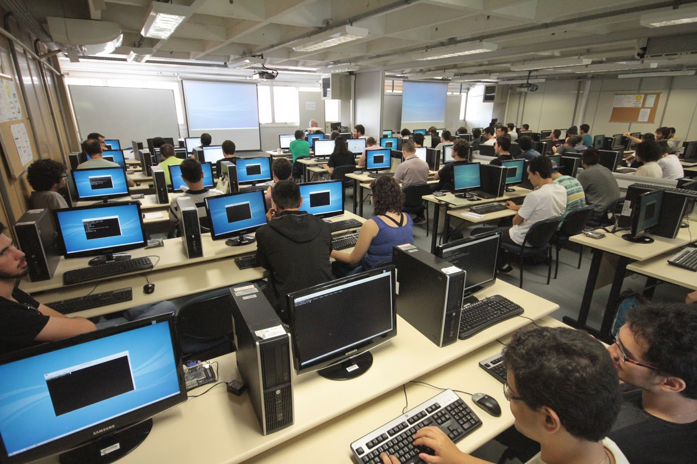
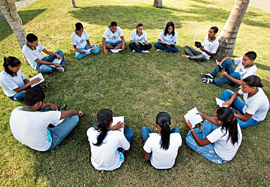

Conecta Jovem
Nossa porta de entrada para o mundo digital. O Conecta Jovem desmistifica a tecnologia e constrói bases sólidas para a primeira oportunidade profissional, transformando consumidores de tecnologia em criadores.
- Informática Básica
- Pacote Office
- Lógica de Programação
- Desenvolvimento Web
O Impacto
Mais do que ensinar a usar um computador, desenvolvemos o pensamento analítico. Jovens que passam pelo programa aumentam em 70% suas chances de conquistar vagas de jovem aprendiz em setores administrativos e de tecnologia, ingressando no mercado de trabalho com confiança e preparo técnico.
Ler e Crescer
A linguagem é a ferramenta primária do pensamento. Este projeto foca no desenvolvimento acadêmico robusto, fortalecendo a capacidade de interpretação, articulação de ideias e escrita, pilares para qualquer trajetória de sucesso.
-
Clube de Leitura
Debates e análise crítica
-
Oficina de Escrita
Redação estruturada
-
Comunicação
Oratória e expressão
-
Prep. Provas
Foco em vestibulares

GLOBAL
Inglês para o Futuro
Quebrando barreiras geográficas e socioeconômicas. O domínio do inglês é um passaporte para um mundo de oportunidades globais, recursos educacionais ilimitados e carreiras de alto nível.
- Inglês Básico
- Conversação Prática
- Vocabulário Profissional
- Simulação de Entrevistas